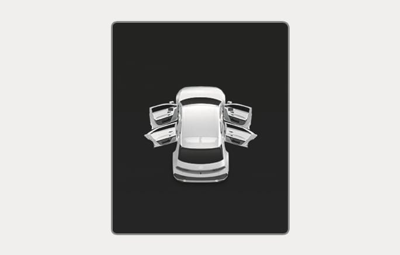
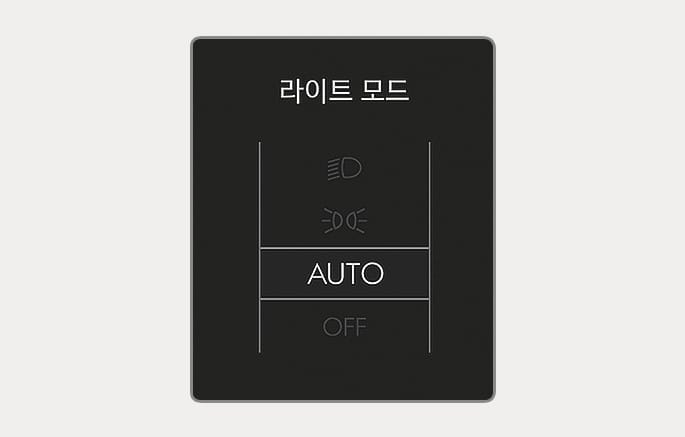
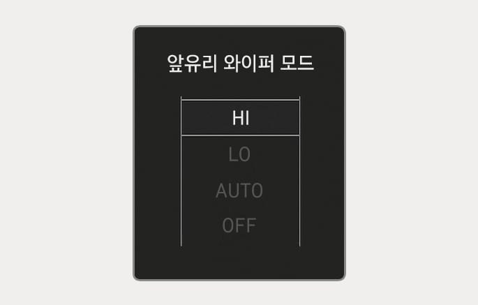

클러스터 메시지 확인하기
메시지의 의미와 메시지가 표시되는 이유를 확인하고 적절하게 조치하십시오.
-
경고 메시지가 표시된 상태로 계속 주행하지 마십시오. 경고 메시지가 표시된 경우 즉시 조치를 취하십시오.
-
조치를 취한 후에도 경고 메시지가 계속 표시되면 즉시 가까운 당사 직영 하이테크센터나 블루핸즈에서 차량을 점검 및 정비하십시오.
차량의 모델 및 사양에 따라 클러스터에 표시되는 내용이 다를 수 있습니다.
|
메시지/표시 정보 |
원인 |
조치 방법 |
|
스마트 키가 실내에 없습니다. |
시동이 켜졌거나 시동 상태가 'ACC' 또는 'ON'일 때 차량 내에 스마트 키가 없는 상태로 도어를 조작했습니다.
|
시동을 끄거나 스마트 키를 휴대하십시오. |
|
스마트 키로 시동 버튼을 직접 누르십시오. |
|
|
|
스마트 키의 배터리 전압이 낮습니다. |
시동이 꺼진 상태에서 차량 내 스마트 키의 배터리가 방전되었습니다. |
스마트 키 배터리를 교체하십시오. |
|
브레이크를 밟은 상태에서 시동을 거십시오. |
브레이크 페달을 밟지 않고 시동 버튼을 연속해서 눌러 'ACC' 상태로 두 번 이상 전환된 경우 표시됩니다. |
시동을 걸려면 브레이크를 밟은 상태로 시동 버튼을 누르십시오. |
|
P 버튼을 누르십시오. |
변속기 위치가 'P'(주차)가 아닌 상태로 시동을 끄려고 하면 몇 초 동안 메시지가 표시됩니다. |
브레이크를 밟은 상태로 'P'(주차)로 변속한 후 시동을 끄십시오. |
|
차량 전원이 켜져 있습니다. 시동 버튼을 누르고 P 단으로 이동한 후에 전원을 끄십시오. |
변속기 위치가 'N'(중립)일 때 시동을 끄려고 하면 시동 상태가 'ACC'로 변경되며 메시지가 표시됩니다. |
시동 버튼을 눌러 시동을 다시 건 후('ON'), P 버튼을 눌러'P'(주차)로 변속하고 시동을 끄십시오. |
|
시동 버튼을 한 번 더 누르십시오. |
시동 버튼 이상 등으로 인해 시동 버튼을 눌렀을 때 시동이 켜지지 않았습니다.
|
|
|
P단에서 시동을 거십시오. |
변속기 위치가 'P'(주차)가 아닌 상태로 시동을 켜려고 하면 몇 초 동안 메시지가 표시됩니다. |
브레이크를 밟은 상태로 'P'(주차)로 변속한 후 시동을 거십시오. |
|
제동 스위치의 퓨즈를 점검하십시오. |
제동 스위치의 퓨즈가 단선되었습니다.
|
|
|
스마트 키 시스템을 점검하십시오. |
스마트 키 시스템에 이상이 발생했습니다. |
당사 직영 하이테크센터나 블루핸즈에서 차량을 점검하십시오. |
|
주차 상태에서 전기장치 사용 시 배터리가 소모될 수 있습니다. |
블랙박스 등 외부 전기 장치 장착 시 주차 중 배터리 방전 위험이 감지되었습니다.
|
|
|
시동을 유지하려면 디지털 키를 무선 충전기에 올려놓으십시오. (사양 적용 시) |
원격 시동 상태에서 디지털 키로 도어를 열었습니다.
|
디지털 키를 무선 충전 패드 위에 올린 후 메시지가 사라지면 차량을 주행하십시오. |
|
디지털 키를 이용해 차량의 전원이나 시동을 켜 놓은 상태입니다. (사양 적용 시) |
디지털 키로 시동을 건 후 운전석 안전벨트 미착용 상태로 운전석 도어를 열었습니다.
|
스마트 키 또는 디지털 키를 휴대하고 있는지 확인하십시오.
|
|
등록된 디지털 키를 무선 충전기에 올려놓고 시동 버튼을 누르십시오. (사양 적용 시) |
디지털 키로 차량에 탑승 후 시동 버튼을 누를 때 차량 내에서 스마트 키가 인식되지 않았습니다. |
디지털 키를 무선 충전 패드 위에 올리거나 스마트 키로 시동 버튼을 직접 누르십시오. |
|
사용자 인증 시스템을 점검하십시오. (사양 적용 시) |
디지털 키 시스템에 이상이 발생했습니다. |
당사 직영 하이테크센터나 블루핸즈에서 차량을 점검하십시오. |
|
가상 엔진 사운드 시스템을 점검하십시오. |
가상 엔진 사운드 시스템에 이상이 발생했습니다. |
당사 직영 하이테크센터나 블루핸즈에서 차량을 점검하십시오. |
|
브레이크를 점검하십시오. |
브레이크 기능에 이상이 발생했습니다.
|
즉시 가까운 당사 직영 하이테크센터나 블루핸즈에서 차량을 점검 및 정비하십시오. |
|
브레이크 시스템 점검! 안전한 곳에 정차하십시오. |
브레이크 시스템에 이상이 발생했습니다. |
차량을 안전한 곳에 정차한 후 가까운 당사 직영 하이테크센터나 블루핸즈로 견인해 점검 및 정비하십시오. |
|
도어, 후드, 테일게이트 열림
 |
도어, 후드 또는 테일게이트가 열려 있는 경우 해당 위치가 이미지로 표시됩니다. |
표시된 도어, 후드 또는 테일게이트를 확인한 후 완전히 닫으십시오. |
|
라이트 모드  |
조명 스위치를 조작하면 선택된 모드가 표시됩니다. |
라이트 모드 표시 여부를 설정하려면, 인포테인먼트 시스템에서 설정 > 클러스터/HUD > 표시 정보를 누른 후 와이퍼/라이트 모드 표시를 선택하십시오. |
|
와이퍼 모드  |
와이퍼 스위치를 조작하면 선택된 모드가 표시됩니다. |
와이퍼 모드 표시 여부를 설정하려면, 인포테인먼트 시스템에서 설정 > 클러스터/HUD > 표시 정보를 누른 후 와이퍼/라이트 모드 표시를 선택하십시오. |
|
타이어 공기압 낮음 
|
타이어 공기압이 일정 수준 이하로 떨어졌습니다.
|
타이어에 공기를 보충하십시오('타이어 공기압 경보 시스템 (TPMS)' 참고). |
|
방향지시등을 점검하십시오. (사양 적용 시) |
방향지시등에 이상이 발생했습니다.
|
당사 직영 하이테크센터나 블루핸즈에서 차량을 점검 및 정비하십시오. |
|
헤드램프 LED를 점검하십시오. (사양 적용 시) |
LED 전조등에 이상이 발생했습니다.
|
당사 직영 하이테크센터나 블루핸즈에서 차량을 점검 및 정비하십시오. |
|
지능형 공기유동제어기를 점검하십시오. |
에어 플랩 또는 에어 플랩 컨트롤러 고장이 감지되었습니다. |
|
|
메시지 |
원인 |
조치 방법 |
|
배터리가 부족합니다. |
차량의 고전압 배터리 충전량이 10 % 이하입니다.
|
즉시 차량을 충전하십시오. |
|
배터리가 부족하여 파워가 제한됩니다. 충전하십시오. |
차량의 고전압 배터리 충전량이 5 % 이하입니다.
|
즉시 차량을 충전하십시오. |
|
전기차 시스템을 점검하십시오. |
전기차 제어 시스템 관련 고장이 발생했습니다. |
|
|
파워가 제한됩니다. |
고전력 부품을 보호하기 위해, 다음과 같은 때 출력이 제한된 경우 표시됩니다.
|
단독으로 표시되는 경우 고장이 아닙니다.
|
|
배터리 온도가 낮아 파워가 제한될 수 있습니다. |
기온이 낮을 때 시동을 걸거나 끄면 전기차 시스템을 보호하기 위해 경고 메시지가 표시됩니다.
|
|
|
배터리 과열 위험! 안전한 곳에 정차하십시오. |
고전압 배터리 온도가 지나치게 높습니다. |
|
|
전원 공급장치 점검! 안전한 곳에 정차하십시오. |
전원 공급 시스템에 고장 또는 이상이 발생했습니다. |
즉시 차량을 안전한 곳에 정차한 후 당사 직영 하이테크센터나 블루핸즈로 견인해 점검 및 정비하십시오. |
|
충전 커넥터 제거 후에 시동을 거십시오. |
충전 커넥터가 연결된 상태로 시동을 걸었습니다. |
충전 커넥터를 분리한 후 시동을 거십시오. |
|
충전 도어 열림 |
충전 도어가 열린 상태로 시동을 걸었습니다. |
충전 도어가 완전히 닫혔는지 확인하십시오. |
|
충전이 중지되었습니다. 외부 완속(급속) 충전기 상태를 확인하십시오. |
다음과 같은 이유로 충전이 중단된 경우 경고 메시지가 표시됩니다.
|
|
|
충전이 중지되었습니다. 충전 케이블의 연결 상태를 확인하십시오. |
다음과 같은 이유로 충전이 중단된 경우 경고 메시지가 표시됩니다.
|
|